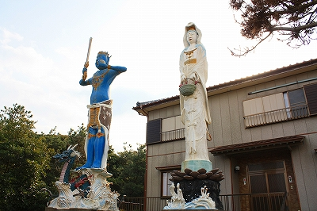

謎のコンクリ仏/千葉県
寒風吹きすさぶ千葉である。
千葉県某所に不思議なコンクリ像があるとのタレコミを聞いて駆けつけたのだった。
恐らくこの辺であろうという場所の住民に尋ねてみるも誰も知らず、挙句の果てにはタクシーが来ないからと知らない爺様を病院に送っていく羽目に。その後も散々さまよった挙句、まさかここはないよなあ〜、と思った住宅地を車でスルーしたとき、草むらの合間にチラッと何かが見えたのであった。
珍寺センサーがカチッと反応！おお、まごう事なき素敵なコンクリ仏だわい。
背後の住宅と比して大きさは5〜6ｍといったところだろうか。

右側の白いお方は籠を持っているので魚籃観音と思われる。
一方、左におわす青いお方は誰？
さらに接近する。遠目には2体のコンクリ像と背後の住宅は無関係かと思われたが、この家の庭先のような場所に建っている。
何でこんな地味なところにこんな派手なコンクリ像があるんだろか？と思いつつ、家に人がいらっしゃったので話を聞くと…
曰く、この建物は東北地方にある宗教団体の研修所のようなところで、以前は年に何度か信者の人達が来ていたが、最近はあまり来ないとのこと（後に調べると法華宗系の新宗教団体であった）。ちなみにこの方は管理人というかお留守番というか…ということであった。
曰く、このコンクリ像は40年ほど前に作られたが、たまには塗り替える、とのこと。
そっか。普通の人ん家じゃないのか。そりゃそうだよなあ。
お参りしてってくださいねーと言われたので遠慮なく拝み倒させていただきますっ！
右の観音様はやはり魚籃観音だった。
法隆寺の百済観音並みの異常なまでに細いプロポーション、いや、細いというより細長いといった方が正確か。
御顔の良し悪しは好みが分かれるところだが、衣の造形などに並々ならぬ技量を感じる。
素人が間違って細長く作っちゃったのとは違う、プロの造形作家あるいは彫刻家の手によるものであろう。
一方、気になるのはこちらのお方。
台座のプレートを見ると元法大権現とある。
全く聞いたことがないお名前。恐らく教団オリジナル神様かと。はじめまして、ナイストゥミーチューです。
こちらも独特のプロポーションである。
ぷっくりお腹に細長い腕、そして異様に長い指に握られているのは宝剣と宝珠だろうか。
基本憤怒相なのだが、どことなくユーモラスで憎めない表情。髪の毛は逆立ってます。
見た目の印象としては吉野の蔵王権現に似てなくもない。
見た目はキテレツだが、先の魚籃観音に比べて気合が入っているように思える。
例えば足元の波頭の作りこみようなどを魚籃観音の足元の波頭と比べると段違いであることがお判りいただけることだろう。
また波間から現れる竜の造形の細かさや腰に巻いた衣の模様などなど…
あっ、良く見りゃトラのパンツならぬ虎の前掛けじゃないの。しかも前足付きの。
さらに良く見りゃ首の部分に穴が開いてるぞ。こりゃひょっとして以前は虎の頭まで付いていたのでは…
まさに竜虎を制する超絶の神様、といったところだろうか。
裏手に回ってみると簡単なデータが刻まれていた。
曰く、魚籃観音は昭和42年に、元法大権現は昭和43年に建立されている。
彫刻は天日土とある（実際には「土」に「’」が付く謎の文字）。プロの彫刻家なのだろうか。詳細は一切不明。
傍には2体のコンクリ像を見守るようにお地蔵さんが立っている。
こちらも異様に細長いプロポーション。同時期に立てられたものだ。

チョット耳が取れちゃってるところを見ると耳にだけお経を書き忘れたのかな。
さらにお地蔵さんの横にはコンクリの魚が。
これが一番意味不明でおかしかったです。
それにしてもおおよそ調べつくした感のある関東でコレだけオリジナリティあふれる立派なコンクリ像が人知れず、というか俺知れず存在するとは。
侮りがたし。千葉！
情報提供はサリーさんでした。サンキュです。
2009.01.
追記 2020.11.
すっかり無くなってました。
一体何が？
珍寺大道場 HOME